视频理解与生成论文串讲¶
💡 最近值得关注的开源视频理解模型（先记录，后面有时间再深入学习）： - MOSS-VL（11B）：交叉注意力解耦架构，视频理解显著超越 Qwen3-VL-8B，支持长视频和原生交错图文输入，推理延迟低。 - LLaVA-OneVision-2.0：引入 Codec-stream tokenization，按事件变化强度分配 token，在细粒度时间定位基准 JumpScore 上表现极强。 - LiveCC（7B）：纯靠 YouTube 免费字幕（ASR）进行流式训练，支持实时视频流解说，小模型在部分榜单上碾压 72B 模型。
0. 视频理解与生成：从分治到统一¶
视频理解和生成曾是两个独立方向：理解模型（如 Video-LLaVA）负责“看懂”视频，生成模型（如 Sora）负责“画出”视频。但当前最前沿的趋势是让同一个模型同时掌握这两种能力，最终走向能够模拟物理规律的世界模型。
可以把这理解为“同一个大脑的两种功能”：大脑既能接收并理解外部信息，也能想象并生成新的画面。实现这种统一，可以从四个层面来看：
0.1 架构的统一：同一套骨架¶
过去，理解模型多用 Transformer 编码器，生成模型多用 U-Net + 扩散。现在生成模型全面转向 DiT（Diffusion Transformer），理解和生成开始共享同一套 Transformer 骨架，为共用参数和统一训练打下基础。
0.2 表征的统一：同一种语言¶
视频和文本的本质差异被压缩为统一的 token / patch 表示。
- Sora 将视频切分为时空块（Spacetime Patches），这些 patch 既可以作为理解模型的输入，也可以作为生成模型的输出。
- 视频不再只是像素矩阵，而是像文本一样变成序列化的编码，理解与生成的输入输出空间开始统一。
0.3 数据与目标的闭环：互相促进¶
统一带来的最大红利是形成数据飞轮：
- 生成反哺理解：生成模型可以合成现实中难以采集的罕见场景，作为理解模型的训练数据。
- 理解矫正生成：理解模型可以在生成过程中监督物理合理性和逻辑一致性，成为生成模型的“纠错老师”。
0.4 任务的统一：输入输出任意组合¶
未来模型不再固定为“输入视频→输出文本”或“输入文本→输出视频”，而是支持任意组合：
- 视频补全：输入前半段视频 + 文字描述，补全后半段。
- 视频编辑：输入视频 + 指令，生成编辑后的结果。
- 交互式世界模拟：输入动作指令，实时生成下一帧画面。
0.5 现状：统一仍在路上¶
需要强调的是，上述“大一统”目前更多是方向而非现实。真正的统一模型尚未成熟，工业界和学术界更多处于松耦合阶段：理解模型和生成模型往往仍由不同团队训练，但开始共用数据清洗流程、分词器（Tokenizer）和基础架构（如 Transformer）。Google 的 VideoPoet、LWM（Large World Model）等尝试用自回归框架把视频理解、生成、图像、音频统一为“下一个 token 预测”，但整体来看，这条路仍在快速演进中。
一句话总结：当 AI 既能准确预测视频下一秒会发生什么，又能凭想象把那一秒画出来，且两者基于同一套逻辑时，视频 AI 就从“图像堆叠的理解工具”进化为可读写、可推演的时空连续体，也就是通向世界模拟器的关键一步。
第一部分：视频理解¶
📄 涉及论文链接： - DeepVideo (CVPR 2014): Large-scale Video Classification with Convolutional Neural Networks - Two-Stream (NeurIPS 2014): Two-Stream Convolutional Networks for Action Recognition in Videos - Beyond Short Snippets (CVPR 2015): Beyond Short Snippets: Deep Networks for Video Classification - Convolutional Two-Stream Network Fusion (CVPR 2016): Convolutional Two-Stream Network Fusion for Video Action Recognition - TSN (ECCV 2016): Temporal Segment Networks: Towards Good Practices for Deep Action Recognition - C3D (ICCV 2015): Learning Spatiotemporal Features with 3D Convolutional Networks - I3D (CVPR 2017): Quo Vadis, Action Recognition? A New Model and the Kinetics Dataset - Non-local Neural Networks (CVPR 2018): Non-local Neural Networks - R(2+1)D (CVPR 2018): A Closer Look at Spatiotemporal Convolutions for Action Recognition - SlowFast (ICCV 2019): SlowFast Networks for Video Recognition - TimeSformer (ICML 2021): Is Space-Time Attention All You Need for Video Understanding?
核心要点¶
- 视频理解的核心难点在于时间轴：如何从连续帧中抽取运动/时序信息，同时避免手工光流的高昂预处理代价。
- 发展历程可大致分为四阶段：
- 2D CNN 直接迁移（DeepVideo）：尝试单帧、Early/Late/Slow Fusion，发现纯 2D 网络学不好时序。
- 双流网络及其变体（Two-Stream → LSTM → Early Fusion → TSN）：用光流显式建模运动，通过融合与分段处理长视频。
- 3D CNN（C3D → I3D → Non-local → R(2+1)D → SlowFast）：用三维卷积直接学习时空特征，逐步解决初始化、长程建模、效率问题。
- Video Transformer（TimeSformer）：将 Vision Transformer 迁移到视频，用拆分的时空自注意力降低显存消耗。
- 光流是极强的运动特征，但抽取耗时耗空间；3D CNN 与 Transformer 试图端到端学习运动，但加大模型后效率仍是痛点。
- 很多改进思路在手工特征时代（IDT + Fisher/Vector）与深度学习时代惊人地相似：加光流、加时序模型、做全局编码。
1. 2D CNN 直接迁移：DeepVideo¶
1.1 背景与动机¶
2012 年 AlexNet 在 ImageNet 上成功后，研究者自然想把 CNN 从图像分类迁移到视频分类。DeepVideo（CVPR 2014）是这一方向的早期代表工作，作者团队来自 Google Research 与 Stanford，一作是 Andrej Karpathy。论文的最大贡献之一不是方法本身，而是提出了当时规模最大的视频数据集 Sports-1M（约 100 万个视频），为后续研究奠定了数据基础。
1.2 核心做法：四种时序融合变体¶
视频与图像的唯一区别是多了一条时间轴。作者尝试了四种把单帧 CNN 扩展到视频的方式：
| 变体 | 做法 | 含义 |
|---|---|---|
| Single Frame | 从视频中任选一帧，过 2D CNN 分类 | 无时间信息，纯 baseline |
| Late Fusion | 随机选几帧，分别过共享权重的 CNN，特征拼接后 FC | 在输出层做融合，学到极弱的时序信息 |
| Early Fusion | 把 5 帧在 RGB channel 上拼接，输入 channel 从 3 变成 15 | 在输入层做融合，网络一开始就能感知时序 |
| Slow Fusion | 把 10 帧分成多个片段，先分别抽特征，再在网络中层逐步融合 | 在特征层面融合，理论上能学习全局时空表示 |
1.3 多分辨率网络：Fovea + Context Stream¶
发现 2D CNN 直接学时序困难后，作者又借鉴图像领域的多尺度思想，把输入分成两个分支：
- Context stream：输入原图，学习整体场景信息。
- Fovea stream：从原图正中心裁剪出一部分，学习图像中心区域（通常物体所在位置）。
这两个分支权重共享，可视为一种早期的“注意力”——强制网络关注画面中心。
1.4 结论与意义¶
在 Sports-1M 上，四种融合方式差距不大；迁移到 UCF-101 上时，最好的变体也远低于当时的手工特征方法。这说明：
- 单纯把 2D CNN 搬到视频上无法有效学习时间信息。
- 但 DeepVideo 的贡献在于提供了大规模数据集，并把最直接的方式都尝试了一遍，为后续双流、3D CNN 的发展铺平了道路。
2. 双流网络及其变体¶
2.1 Two-Stream Network¶
双流网络的核心思想是：既然一个 CNN 学不好时序，那就再加一个专门处理运动的网络。
输入视频
├─ 空间流（Spatial Stream）：取 RGB 单帧
│ └── 2D CNN ──→ 空间特征 ──┐
│ │ Late Fusion（加权平均）
└─ 时间流（Temporal Stream）：抽取光流图像
└── 2D CNN ──→ 运动特征 ──┘
- 空间流学习从 RGB 图像到分类的映射。
- 时间流学习从光流图像到分类的映射。
- 两个网络各司其职，最后做 Late Fusion（softmax 后加权平均）。
光流图像包含了物体运动信息，因此网络不再需要自己从原始视频中学习运动，大幅简化了优化问题。
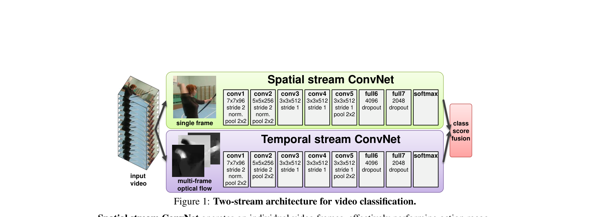
Figure 1: Two-stream architecture for video classification。空间流处理 RGB 单帧，时间流处理光流图像，最后做 Late Fusion。2.2 Beyond Short Snippets：用 LSTM 处理长视频¶
双流网络只能处理很短的视频片段（光流通常只有 10 帧，约 0.4 秒）。为了覆盖更长的视频，Beyond Short Snippets（CVPR 2015）在双流之后加了时序建模：
- 先用 CNN 对每一帧/光流帧抽取特征。
- 把特征序列输入 5 层 LSTM，做时序融合。
- 最后 softmax 分类。
作者也尝试了多种 pooling 方式（max pooling、average pooling、conv pooling 等），发现 conv pooling 与 LSTM 效果相近。在短视频数据集上 LSTM 提升有限，因为短视频的语义信息变化不大，LSTM 接收到的特征序列几乎没有变化。
2.3 Convolutional Two-Stream Network Fusion：Early Fusion¶
双流网络做的是 Late Fusion，研究者自然想问：如果在网络中层就做融合，让空间流与时间流互相交互，会不会更好？
这篇 CVPR 2016 的论文系统研究了三个问题：
- Spatial Fusion：两个流的特征图在同一空间位置如何合并？尝试了 max fusion、concatenation、conv fusion、sum、bilinear 等，最终 conv fusion 效果最好。
- 在哪一层融合：尝试了 conv1~conv5、FC6/FC7 等不同位置，最终发现 conv5 附近融合效果较好。
- Temporal Fusion：多帧特征如何在时间轴上合并？尝试了 3D pooling 与 3D conv + 3D pooling。
最终提出的结构有两个分支：
- Spatiotemporal branch：在 conv5 层把空间流与时间流做 3D conv fusion + 3D pooling，学习时空特征。
- Temporal branch：单独把时间流再 pooling、FC，学习时间特征。
训练时有两个损失函数：Spatiotemporal Loss 与 Temporal Loss。推理时把两个分支的预测做 Late Fusion。
2.4 TSN：Temporal Segment Networks¶
TSN（ECCV 2016）是双流网络方向上最具影响力的工作之一。核心思想极其简单：把长视频分成若干段，每段抽一帧 RGB 与对应光流，分别过同一个双流网络，最后把各段的 logits 做 Segmental Consensus（平均、最大、相乘或 LSTM）。
长视频 ──→ 分成 K 段
段 1 ──→ 抽 1 帧 RGB + 光流 ──→ 双流网络 ──→ logits ──┐
段 2 ──→ 抽 1 帧 RGB + 光流 ──→ 双流网络 ──→ logits ──┼── Segmental Consensus
段 3 ──→ 抽 1 帧 RGB + 光流 ──→ 双流网络 ──→ logits ──┘
↓
Late Fusion → 分类
所有段的 Spatial ConvNet 共享参数，Temporal ConvNet 也共享参数，因此实际只有一组双流网络。
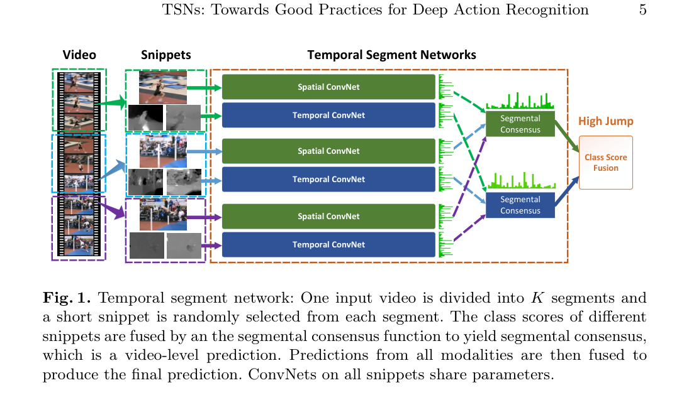
Figure 1: Temporal segment network：一个视频分成 K 段，每段抽 RGB 与光流过共享参数的双流网络，最后做 Segmental Consensus。TSN 更大的贡献是提出了一系列 Good Practices：
- Cross Modality Pre-training：光流没有大规模预训练数据集。作者把 ImageNet 预训练模型第一层 RGB 3 个 channel 的参数取平均，复制成 20 个 channel，用于光流分支初始化。
- Partial BN：数据集小，微调所有 BN 容易过拟合；全部冻结 BN 又迁移不够。于是只打开第一层 BN，其余 BN 冻结。
- 数据增强：
- Corner cropping：强制裁剪图像四个角与中心，避免 random crop 总是落在中心。
- Scale jittering：把视频帧 resize 到 256×340，再按多种长宽比裁剪，增加输入多样性。
2.5 其他双流方向工作¶
- TDD（CVPR 2015）：沿着光流轨迹堆叠特征，而不是简单堆叠光流图。
- DVOF / TLE / ActionVLAD：在 TSN 基础上加入全局编码（Fisher Vectors、VLAD、bilinear encoding），学习 video-level 全局特征。
3. 3D 卷积神经网络¶
3.1 C3D：直接用 3D CNN 学习时空特征¶
C3D（ICCV 2015）的思路非常直接：视频是 3D 输入（时间 + 空间），因此用 3D 卷积神经网络学习时空特征。
网络结构本质上是一个 3D 版 VGG：
输入：16 × 112 × 112（16 帧，空间 112×112）
↓
Conv1 + Pool1（pool: 1×2×2，时间不下采样）→ 16 × 56 × 56
↓
Conv2 + Pool2（pool: 2×2×2） → 8 × 28 × 28
↓
Conv3a, Conv3b + Pool3 → 4 × 14 × 14
↓
Conv4a, Conv4b + Pool4 → 2 × 7 × 7
↓
Conv5a, Conv5b + Pool5 → 1 × 4 × 4
↓
FC6, FC7, FC8
所有 2D 卷积核 \(3\times3\) 都扩展为 3D 卷积核 \(3\times3\times3\)。第一个 pooling 在时间维度上不做下采样，以保留时序信息。
C3D 的实际用法更多是抽特征：从 FC6 抽取 4096 维特征，再训练 SVM 分类器。由于训练 3D 网络非常耗时（作者当时训练花了一个月），直接抽特征成为许多下游任务（video detection、video captioning 等）的首选。
3.2 I3D：Inflated 3D ConvNet¶
C3D 之后近两年，I3D（CVPR 2017）才出现。它的核心贡献是 Inflation：把一个在 ImageNet 上预训练好的 2D 网络“膨胀”成 3D 网络，从而复用 2D 预训练参数，解决 3D 网络难训练的问题。
2D Inception-v1 Inflation 3D I3D
7×7 conv ────────────────────────→ 7×7×7 conv
3×3 conv ────────────────────────→ 3×3×3 conv
1×3×3 pool ────────────────────────→ 1×3×3 pool / 3×3×3 pool
Inflation 有两个好处：
- 结构不变：2D 与 3D 网络 meta architecture 相同，只是卷积核从二维变成三维。
- 参数可迁移：2D 预训练权重可以直接复制到 3D 卷积核上（沿时间轴复制），得到好的初始化。
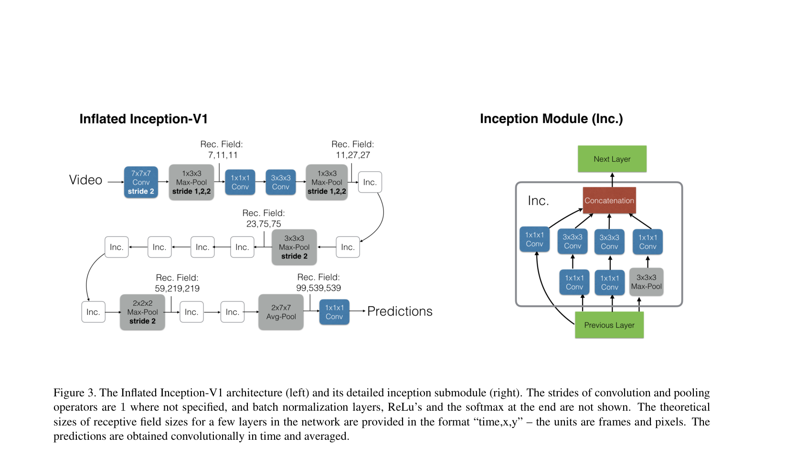
Figure 3: I3D 的 Inflation 示意图。将 2D Inception-v1 的卷积核与池化核沿时间轴扩展为 3D，结构保持不变，从而复用 ImageNet 预训练权重。I3D 还同时训练了 RGB I3D 与 Flow I3D，证明即使 3D 网络能端到端学习运动，加入光流仍能进一步提升效果——光流仍然是非常强的特征。
3.3 Non-local Neural Networks：把 Self-Attention 引入视频¶
Non-local（CVPR 2018）的核心思想是：卷积与 LSTM 都是局部操作，而视频理解需要长距离时序建模。作者把 NLP 中的 self-attention 引入视觉，提出 non-local block，作为即插即用模块插入 CNN。
一个时空 non-local block 的结构如下：
输入特征 X
├─ θ(X) ──→ query
├─ φ(X) ──→ key
└─ g(X) ──→ value
query · key^T ──→ softmax ──→ attention weights
│
↓
attention weights · value ──→ 加权特征
│
↓
残差连接 + X ──→ 输出
这与标准的 self-attention 完全一致，只是操作在 3D 特征图（空间 + 时间）上进行。消融实验表明：
- 用 dot product 计算相似度效果最好。
- 在 ResNet 的 res3 与 res4 阶段插入效果最佳。
- 同时做空间与时间 self-attention（spacetime）优于只做空间或只做时间。
- 输入视频越长（如 128 帧，约 4 秒），non-local 带来的提升越明显。
Non-local 之后，视频领域越来越少使用 LSTM，self-attention 成为长程建模的主流工具。
3.4 R(2+1)D：拆解 3D 卷积¶
R(2+1)D（CVPR 2018）是一篇实验性论文，系统比较了 2D、3D、2D+3D 混合等多种时空卷积设计。最终发现：把一个 \(t\times d\times d\) 的 3D 卷积拆成先 2D 空间卷积，再 1D 时间卷积，效果优于纯 3D 网络。
原始 3D 卷积：t × d × d
↓ 拆分
R(2+1)D:
1. 2D 空间卷积：1 × d × d（时间维度不变）
2. 特征投影（调整通道数）
3. 1D 时间卷积：t × 1 × 1（空间维度不变）
拆分的好处：
- 增加非线性：原来 3D conv 后只有一个 ReLU，拆分后有两个卷积，对应两个 ReLU，模型表达能力更强。
- 更容易优化：2D 与 1D 卷积分别学习空间与时间，比直接学习 3D 卷积更容易训练。
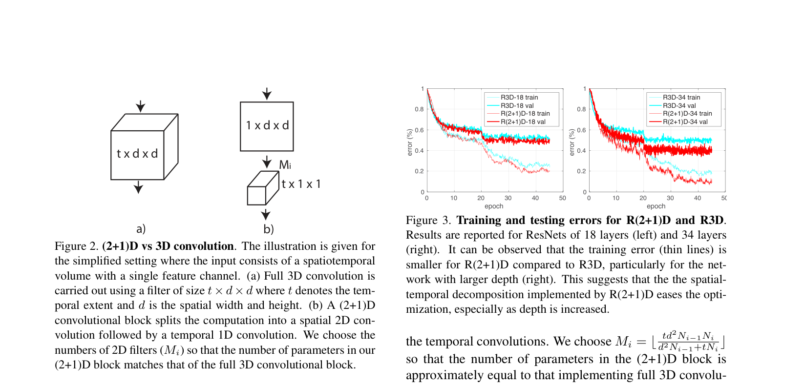
Figure 2: R(2+1)D 将 \(t\times d\times d\) 的 3D 卷积拆分为先 2D 空间卷积，再 1D 时间卷积，中间加入特征投影以匹配参数量。R(2+1)D 的输入为 112×112，小于 I3D 的 224×224，因此更省显存，常被用作自监督/对比学习的 backbone。
3.5 SlowFast：快慢双分支 3D 网络¶
SlowFast（ICCV 2019）借鉴了人眼视觉系统的两种细胞：
- P 细胞（占 80%）：处理静态图像细节。
- M 细胞（占 20%）：处理高频运动信息。
对应到网络设计上：
输入视频（64 帧，224×224）
├─ Slow 分支：低帧率采样（每 16 帧取 1 帧 → 4 帧）
│ └── 大网络（I3D / ResNet-50，通道数多）
│ 主要负责空间语义
│
└─ Fast 分支：高帧率采样（每 1 帧取 1 帧 → 32 帧）
└── 小网络（通道数少，轻量）
主要负责运动信息
↓
Lateral Connection（横向连接）
↓
融合输出
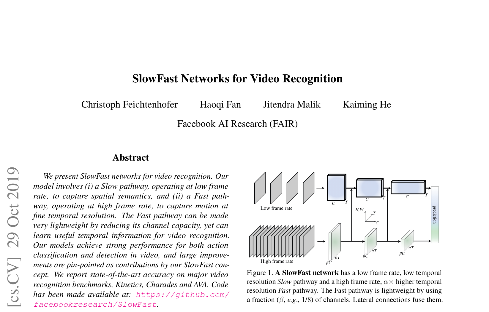
Figure 1: SlowFast 网络结构。Slow 分支低帧率、大网络，学习空间语义；Fast 分支高帧率、小网络，学习运动信息；两分支通过 lateral connection 交互。- Slow 分支：输入帧数少，但网络大、通道多，学习静态场景。
- Fast 分支：输入帧数多，但网络小、通道少，学习动态运动。
- 两个分支之间通过 lateral connection 进行信息交互。
- 时间维度始终不下采样，保留完整时序信息；空间维度逐步下采样。
SlowFast 在精度与效率之间取得了较好平衡，是 3D CNN 方向的代表性工作。
3.6 其他 3D 方向工作¶
- R3D / MFNet / STCNet：把 ResNet、ResNeXt、SENet 等 2D 网络通过 inflation 或重新设计扩展到 3D。
- P3D / S3D / ECO：探索 2D 与 3D 的混合结构（头重脚轻或头轻脚重）。
- LTC / T3D / V4D：探索更长的时序输入与长程建模。
- CSN / X3D：探索高效率 3D 网络，X3D 通过 AutoML 搜索得到极小但效果很好的模型。
- Hidden Two-Stream：把光流学习嵌入网络内部，避免显式抽取光流。
- TSM（Temporal Shift Module）：在 2D CNN 中加入 shift 操作，使 2D 网络具备时序建模能力，便于部署。
4. Video Transformer¶
4.1 ViViT：视频 Vision Transformer¶
📄 论文：ViViT: A Video Vision Transformer
作者：Anurag Arnab, Mostafa Dehghani, Georg Heigold, Chen Sun, Mario Lucic, Cordelia Schmid (Google Research)
发表：ICCV 2021
核心思想：将 ViT 直接扩展到视频，用纯 Transformer 架构（无卷积）处理视频分类任务。
1.1 背景与动机¶
2020 年 ViT 在图像分类上取得成功后，自然的问题是：能否用纯 Transformer 处理视频？
挑战在于： - 视频产生的 token 序列非常长（空间 × 时间），全自注意力计算复杂度是二次方 - Transformer 通常需要大数据集，但视频数据集相对较小 - 需要设计高效的时空注意力机制
1.2 核心方法：Tubelet Embedding¶
关键创新：将 ViT 的 2D patch embedding 扩展为 3D tubelet embedding。
Tubelet 的定义： - 从视频体积中提取不重叠的时空管（tube），大小为 \(t \times h \times w\) - 数学上等价于 3D 卷积：卷积核大小 = 步长 = \((t, h, w)\) - Token 数量：\(n_t = T/t\), \(n_h = H/h\), \(n_w = W/w\)，总 token 数 = \(n_t \times n_h \times n_w\)
与 2D patch 的对比：
| 维度 | ViT（图像） | ViViT（视频） |
|---|---|---|
| Patch 形状 | \(h \times w\)（2D） | \(t \times h \times w\)（3D） |
| Embedding | 2D 卷积 | 3D 卷积 |
| 时序信息 | 无 | 在 tokenization 阶段融合 |
为什么这样设计：如果直接用 ViT 处理视频（每帧独立切 patch），序列长度会爆炸。假设 16×16 patches，10 秒视频 × 2 fps = 20 帧，总 tokens = 20 × 256 = 5120 tokens。通过 3D 卷积压缩时间维度，每 2 帧合并为 1 个 tube，总 tokens 减半为 2560，同时保留了时序信息。
1.3 四种模型变体¶
视频 token 序列很长，如果让所有 token 互相做 attention，计算量会爆炸。ViViT 提出了四种变体，核心区别是在 Transformer 的哪个层级、以何种方式对空间和时间维度做分解。
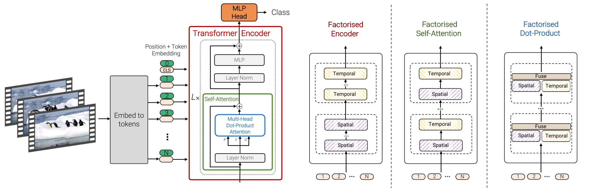
Figure 1: ViViT 的四种模型变体。从左到右依次是：Spatio-temporal attention、Factorised encoder、Factorised self-attention、Factorised dot-product attention，分别对应不同的时空注意力分解策略。Model 1：Spatio-temporal attention（时空联合注意力）¶
做法：把视频里所有帧的所有 patch token 全部拉平成一个长序列，然后送进标准 Transformer encoder。每个 token 既能看到同一帧里的其他 patch，也能看到其他帧的 patch。
特点： - 最直观，相当于把视频当成一张“超宽图像”来处理。 - 每一层都能同时建模空间关系和时间关系，长距离依赖能力强。 - 缺点是 token 数量随帧数线性增长，而 attention 计算量随 token 数平方增长，帧数一多就受不了。
Model 2：Factorised encoder（分解编码器）¶
做法：用两个独立的 Transformer encoder 串起来。 1. Spatial encoder：只处理同一时刻（同一帧）内的 patch token，学习单帧画面内容。经过若干层后，把整帧压缩成一个帧级向量。 2. Temporal encoder：把所有帧的帧级向量按时间顺序拼起来，再处理时间关系，最后分类。
如何把一帧压缩成一个向量： - 如果输入里加了 ViT 那种 CLS token，就取 CLS token 最终输出的向量作为整帧表示。 - 如果没有 CLS token，则对 spatial encoder 输出的所有 patch token 做全局平均池化，得到一个向量代表整帧。
特点： - 空间和时间是“晚期融合”：先各自处理，最后才合在一起。 - 很像传统视频 CNN 的做法：先用 2D CNN 抽每帧特征，再聚合时序。 - Spatial encoder 可以直接用预训练的图像 ViT 初始化。 - 总层数比 Model 1 多，参数更多，但计算量反而更小。
Model 3：Factorised self-attention（分解自注意力）¶
做法：Transformer 层数和 Model 1 一样多，但每一层里的 self-attention 被拆成两步： 1. Spatial self-attention：每个 token 只看同一帧里的其他 token，学习“这一帧里有什么”。 2. Temporal self-attention：每个 token 只看不同帧里同一空间位置的 token，学习“这个位置随时间怎么变化”。
特点： - 每一层都能同时接触空间和时间信息，不是像 Model 2 那样等到最后才融合。 - 通过 reshape token 维度来实现空间 attention 和时间 attention 的切换。 - 因为每层多了一次 attention 计算，参数量比 Model 1 大。 - 为了避免 reshape 时 CLS token 位置不好处理，这个模型不使用 CLS token。 - 这种思想和 TimeSformer 的 "Divided Space-Time" 是类似的。
Model 4：Factorised dot-product attention（分解点积注意力）¶
做法：层数和参数量都跟 Model 1 一样，但把 multi-head attention 里的 heads 分成两组： - 一半 heads 只在空间维度上算注意力（同一帧内不同位置之间）。 - 另一半 heads 只在时间维度上算注意力（同一空间位置跨帧之间）。 - 最后把两组 heads 的输出拼起来，过一个线性投影。
具体怎么限制 attention 范围： 以“第 3 帧左上角”这个 token 为例： - 空间头的 key/value 只从第 3 帧里挑（同一帧内所有位置）。 - 时间头的 key/value 只从“左上角这个位置”跨所有帧挑。
特点： - 计算量是四种变体里最小的，因为没有增加任何 layer。 - 参数量和 Model 1 相同，因为只是改 attention 的“视野范围”，没改网络结构。 - 每个 head 只能专门看空间或专门看时间，表达能力比 Model 1 弱一些。
四种变体对比¶
| 变体 | 核心思想 | 层数/结构与 Model 1 的关系 | 计算量 | 参数量 | 时空融合位置 |
|---|---|---|---|---|---|
| Model 1 Spatio-temporal attention | 所有 token 一起看 | 相同结构 | 最大 | 与 ViT 相同 | 每层、每个 token |
| Model 2 Factorised encoder | 两个 encoder 串着用 | 两个独立 encoder | 较小 | 更多 | 两个 encoder 之间（late fusion） |
| Model 3 Factorised self-attention | 每层内先空间后时间 attention | 相同层数，每层多一个 MSA block | 较小 | 更多 | 每层内部 |
| Model 4 Factorised dot-product attention | 不同 heads 分别看空间和时间 | 相同层数和 block 数 | 最小 | 相同 | 每个 multi-head attention 内部 |
工程选择建议： - 如果计算资源充足、追求最大容量，用 Model 1。 - 如果想利用图像预训练权重、精度最好，用 Model 2。 - 如果希望每层都融合时空、精度与效率兼顾，用 Model 3。 - 如果计算资源最少、参数量不能增加，用 Model 4。
1.4 从图像模型初始化¶
关键策略：从预训练的 ViT 图像模型初始化，加速收敛。视频模型比图像模型多了时间维度的 token，因此需要把预训练的 2D 组件合理地扩展到 3D。
位置编码的扩展¶
ViT 的位置编码：只编码空间位置。一张图被切成 \(n_h \times n_w\) 个 patch，所以位置编码的形状是 \((n_h \cdot n_w) \times d\)，对应每个空间位置一个向量。
ViViT 的位置编码：要编码时空位置。视频被切成 \(n_t \times n_h \times n_w\) 个 tubelet token，所以位置编码的形状是 \((n_t \cdot n_h \cdot n_w) \times d\)。
初始化方式：由于视频 token 数量是图像的 \(n_t\) 倍，ViViT 把预训练 ViT 的位置编码沿时间维度重复。也就是说，在初始化时，第 1 帧左上角、第 2 帧左上角、第 3 帧左上角……这些同一空间位置但不同时间帧的 token，都使用相同的位置编码向量。然后在训练过程中再微调。
这个设计的直觉是：同一空间位置在不同帧里，初始时应该“看起来差不多”，让模型从零开始自己学习时间上的变化，而不是一开始就强行给不同帧的同一位置分配完全不同的位置编码。
各组件初始化方法¶
| 组件 | 初始化方法 |
|---|---|
| 位置编码 | 从图像 ViT 的 \((n_h \cdot n_w) \times d\) 位置编码沿时间维度重复到 \((n_t \cdot n_h \cdot n_w) \times d\)，同空间位置跨帧共享初始值 |
| Tubelet embedding | 中心帧初始化（论文采用）：把图像 patch embedding 权重放在 3D 卷积核的时间中心位置，其余时间位置全部置零。初始化时模型只看中心帧，等价于图像 ViT 的行为；训练过程中其他时间位置的权重从零开始学习聚合多帧信息 |
| Model 3 的 temporal MSA | Spatial MSA 从 ViT 初始化，temporal MSA 权重初始化为零 |
补充说明：另一种可选策略是 filter inflation
论文里也提到了另一种把 2D patch embedding 扩展到 3D 的方法：把图像 patch embedding 在时间维度上复制 t 份，然后求平均。这样 3D 卷积核在所有时间位置上都看到相同的图像内容，初始时等价于对多帧做平均。但论文实际采用的是上面的中心帧初始化，因为它更接近预训练图像 ViT 的行为，训练更稳定。
1.5 总结¶
ViViT 的核心贡献： - 首次证明纯 Transformer 可以直接处理视频分类 - Tubelet embedding 是 ViT 2D patch 的 3D 扩展，在 tokenization 阶段融合时空信息 - 四种时空注意力分解策略覆盖不同效率-精度需求：Factorised encoder 精度最好、Factorised dot-product 计算最省、Factorised self-attention 每层都融合时空 - 从图像模型初始化是训练视频 Transformer 的关键策略
4.2 TimeSformer：时空分离注意力¶
TimeSformer（ICML 2021）与 ViViT 几乎同期提出，但它进一步追问：是否需要 3D tokenization？ 作者系统比较了多种时空注意力方案，发现用 2D patch + Divided Space-Time Attention 也能取得很好的效果。题目化用 Transformer 原文：Is Space-Time Attention All You Need for Video Understanding?
作者尝试了五种自注意力设计：
| 结构 | 做法 | 特点 |
|---|---|---|
| Space Attention | 只在单帧特征图上做 self-attention | 图像 ViT 的 baseline，无时间建模 |
| Joint Space-Time Attention | 在时间、空间、通道三个维度上同时做 self-attention | 效果最好但显存爆炸 |
| Divided Space-Time Attention | 先做时间 self-attention，再做空间 self-attention | 计算量大幅下降，效果接近 joint |
| Local Global Attention | 先在小窗口内做局部 attention，再做稀疏全局 attention | 类似 Swin Transformer 思想 |
| Axial Attention | 沿时间轴、横轴、纵轴分别做 1D attention | 复杂度最低，但效果有 trade-off |
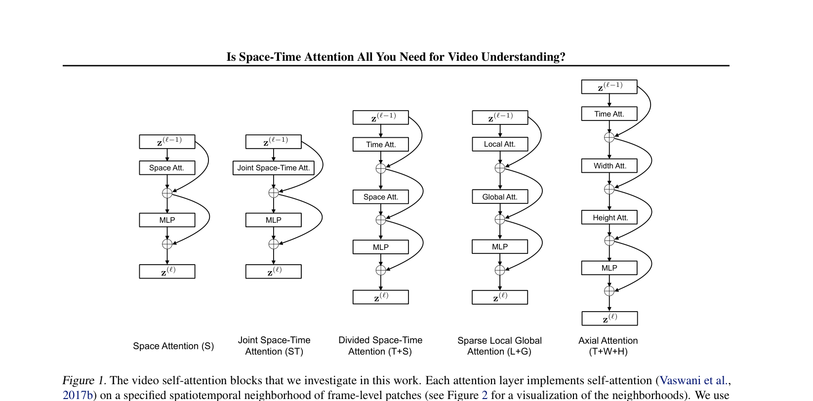
Figure 1: TimeSformer 研究的五种视频 self-attention 块结构：Space、Joint Space-Time、Divided Space-Time、Local Global、Axial。Divided Space-Time Attention 的具体流程：
输入：T 帧，每帧切分成 N 个 patch，共 T×N 个 token
↓
Temporal Self-Attention：每个空间位置 (i,j) 的 token
在时间轴 T 上做 self-attention
↓
Spatial Self-Attention：每一帧内部，N 个 patch 之间做 self-attention
↓
MLP + 残差连接
↓
输出
这本质上与 R(2+1)D“把 3D 拆成 2D+1D”的思想一致，只是从卷积换成了 self-attention。
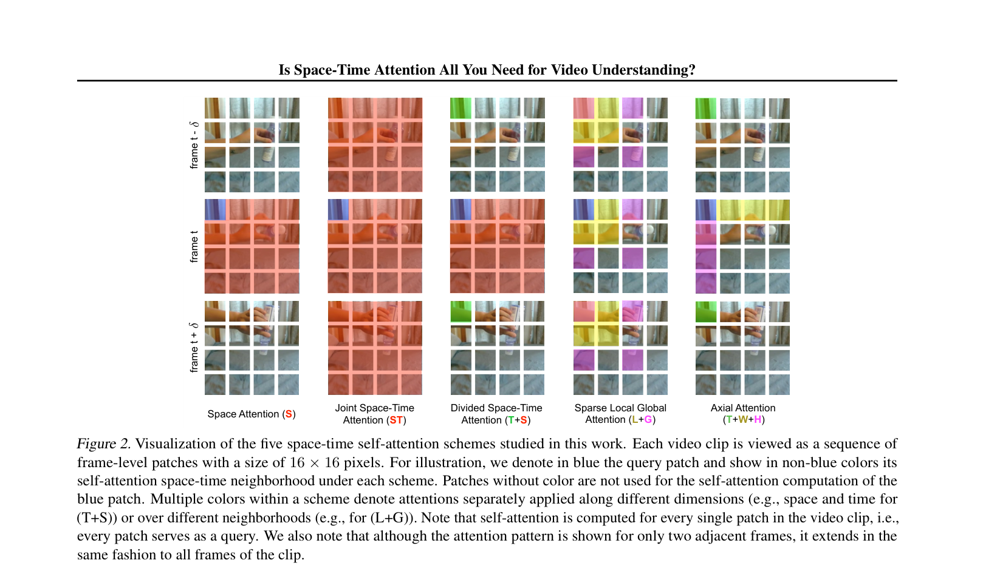
Figure 2: 五种空间-时间 self-attention 方案的可视化。蓝色 patch 为查询位置，绿色/黄色/紫色分别表示时间、水平轴、垂直轴上的 attention 范围。消融实验表明：
- 在 K-400 这种偏静态的数据集上，纯 Space Attention 效果也不错。
- 在 Something-Something V2 这种强调动作的数据集上，必须考虑时间维度。
- Divided Space-Time 在效果与显存之间取得了最佳平衡，能训练更大输入、更长视频。
ViViT、TimeSformer 之后，VidTr、MViT、VideoMAE 等工作陆续出现，基本都沿着“拆分时空自注意力”或“掩码自监督预训练”的路线推进。
4.3 VideoMAE：视频掩码自编码器¶
📄 论文：VideoMAE: Masked Autoencoders are Data-Efficient Learners for Self-Supervised Video Pre-Training
作者：Zhan Tong, Yibing Song, Jue Wang, Limin Wang (Nanjing University & Tencent AI Lab)
发表：NeurIPS 2022
核心思想：将 MAE 的掩码预训练思路搬到视频上，通过 tube masking（管状掩码）策略 配合 高达 90% 的掩码比例，解决视频时序冗余带来的信息泄露问题，实现数据高效的视频自监督学习。
3.1 背景与动机¶
MAE 在图像上展示了掩码自编码的强大能力，但直接搬到视频上会面临两个问题：
- 掩码比例太低：图像 MAE 用 75% masking，但视频的时序冗余（相邻帧高度相似）使得 75% masking 太容易重建——模型可以从相邻帧 trivially 恢复缺失内容
- 信息泄露：随机 masking 或帧 masking 会导致时序相关，masked 内容在相邻帧重现
关键洞察：视频需要更高的掩码比例和tube masking 策略。
3.2 核心方法：Tube Masking + 90% Masking¶
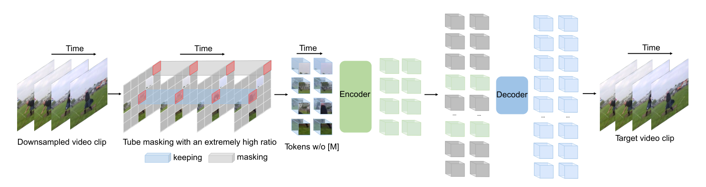
Figure 3: VideoMAE 整体框架：通过 tube masking 掩码 90% 的时空 token，仅对可见 token 编码，再用轻量 decoder 重建完整视频。输入处理流程：
输入视频 → 时序下采样 → Cube Embedding → Tube Masking (90%)
↓
仅 unmasked tokens (~10%)
↓
Encoder (ViT)
Joint Space-Time Attention
↓
编码后的特征
↓
Decoder (4 blocks)
+ Masked token embeddings
↓
重建视频
- 时序下采样：对输入视频在时间维度上按固定间隔抽帧，降低时序冗余和后续计算量。
- Cube Embedding：把视频切分成三维小块（cube），每个 cube 同时包含空间和时间信息。例如一个 cube 可以是 2×16×16（时间帧数 × 高 × 宽），每个 cube 通过线性投影变成一个 token。这相当于把图像 ViT 的 2D patch embedding 扩展到 3D。
- Tube Masking (90%)：对 cube token 进行管状掩码，同一空间位置在所有时间步共享同一个 mask 值，最终约 90% 的 token 被遮住，仅约 10% 的可见 token 进入 encoder。
Tube Masking 策略：
- 同一空间位置 \((x, y)\) 在所有时间步共享相同的 mask 值
- Mask 在时间维度上延伸为"tube"（管状）
- 防止信息泄露：如果逐帧独立 mask，masked patch 可以从相邻帧的对应位置 trivially 恢复
90% Masking Ratio：
- 图像 MAE 用 75%，VideoMAE 用 90%-95%
- 为什么这么高：视频的时序冗余使得低比例 masking 太容易，高比例 forcing 模型学习高层语义而非低级像素插值
- 只有 ~10% 的 token 进入 encoder，大幅降低计算成本
非对称 Encoder-Decoder 架构：
- Encoder：只接收约 10% 的 unmasked tokens，使用标准的 ViT 结构，内部采用 joint space-time attention，让 token 之间同时建模空间和时间关系。
- Decoder：轻量级（论文用 4 个 Transformer block），接收 encoder 输出的可见 token 表示，并加入可学习的 masked token embeddings，重建完整视频。
- Masked token embeddings：被 mask 掉的位置没有原始输入，因此每个 mask 位置都使用一个可学习的向量作为占位符。这个向量不是来自视频内容，而是模型参数的一部分，与网络一起训练。Decoder 把可见 token 的编码和这些 mask token 拼接成一个完整序列，再各自加上位置编码，一起送入 Transformer 预测原始像素。
- 重建目标：对每个被 mask 的 cube 内的像素做归一化后计算 MSE loss。
关键设计： - Encoder 只处理 unmasked tokens（~10%），大幅降低计算量 - Decoder 接收 masked tokens + encoder 输出，重建完整视频 - Joint space-time attention：所有 token 对的交互（二次复杂度，但因只处理 10% tokens 而可接受） - MSE loss：重建归一化的 cube 像素（优于 L1 和 Smooth L1）
3.3 数据效率¶
VideoMAE 的核心发现之一是数据质量 > 数据数量：
- 在小型数据集（3k-4k 视频）上无需额外数据就能达到强结果
- 领域匹配的小数据集优于领域偏移的大数据集
- 证明掩码自编码比对比学习更适合视频的数据高效学习
3.4 与 ViViT/TimeSformer 的对比¶
| 维度 | ViViT / TimeSformer | VideoMAE |
|---|---|---|
| 学习范式 | 有监督分类 | 自监督预训练 + 微调 |
| 核心任务 | 视频分类 | 掩码重建（预训练） |
| Masking | 无 | 90% tube masking |
| 数据效率 | 需要大数据集 | 小数据集也有效 |
| 计算效率 | 全 token 处理 | Encoder 只处理 10% tokens |
3.5 总结¶
VideoMAE 的核心贡献： - Tube masking 防止时序信息泄露，是视频 MAE 的关键 - 90% masking ratio 利用视频冗余，forcing 模型学习高层语义 - 非对称 encoder-decoder 大幅降低计算成本 - 数据高效：小数据集 + 自监督预训练就能达到强结果 - 为后续视频 LLM 的视觉编码器提供了预训练范式
5. 视频大语言模型¶
视频基础表征解决了"如何从视频中提取特征"，但如何将视频特征与 LLM 对齐，实现视频理解和推理？这是视频 LLM 的核心挑战。
5.1 Video-LLaVA - 统一图文视频表征 (2023)¶
📄 论文：Video-LLaVA: Learning United Visual Representation by Alignment Before Projection
作者：Bin Lin, Yang Ye, Bin Zhu, Jiaxi Cui, Munang Ning, Peng Jin, Li Yuan (Peking University Shenzhen Graduate School)
发表：arXiv 2023
核心思想：在投影层之前就对齐图像和视频的表征（Alignment Before Projection），用共享的投影层将统一的视觉特征映射到 LLM 输入空间。
5.1.1 背景与动机¶
大多数 LVLM 要么处理图像，要么处理视频，不能同时处理两者。尝试统一的方法面临问题：
- VideoChat / Video-LLaMA：共享视觉编码器，但图像和视频特征空间本质不同，LLM 难以学习统一表征
- ImageBind-LLM：通过缓存数据库检索间接对齐，导致性能下降，LLM 中没有实际的视频知识
关键洞察：如果图像和视频特征在到达投影层之前就已经对齐，LLM 可以更有效地学习多模态交互。
5.1.2 核心方法：Alignment Before Projection¶
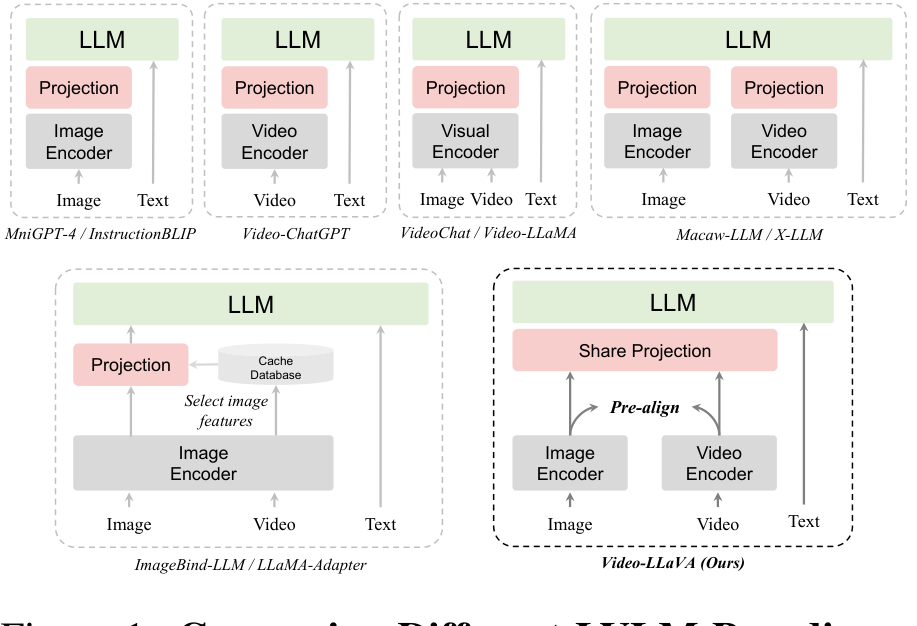
Figure 4: Video-LLaVA 的 Alignment Before Projection 架构：图像和视频先分别经过 LanguageBind 编码器，在共享投影层之前完成跨模态对齐。架构：
图像 ──→ LanguageBind 图像编码器 ──┐
├──→ 共享投影层 (2×FC+GeLU) ──→ ┐
视频 ──→ LanguageBind 视频编码器 ──┘ │
↓
文本查询 ──→ Word Embedding 层 ──────────────────────→ Vicuna-7B v1.5 (LLM)
↓
生成响应
关键组件：
- LanguageBind 编码器：
- 从 OpenCLIP-L/14 初始化（自然对齐图像和语言）
- 用 VIDAL-10M 的 3M 视频-文本对扩展到视频
-
通过共享语言空间，图像和视频之间产生涌现对齐
-
共享投影层：
- 2 个全连接层 + GeLU 激活
- 将统一的视觉特征映射到 LLM 输入空间
-
为什么能共享：因为 LanguageBind 已经对齐了图像和视频
-
动态联合训练：
- 每个 batch 随机组合图像和视频样本
- 图像和视频互相增强：视频提升图像理解，反之亦然
训练流程（2 阶段）：
| 阶段 | 数据 | 目标 |
|---|---|---|
| Stage 1（理解预训练） | 558K LAION-CC-SBU 图像 + 702K Valley 视频 | 单轮对话，简洁描述 |
| Stage 2（指令微调） | 665K LLaVA-mixed 图像 + 100K Video-ChatGPT 视频 | 多轮对话，详细推理 |
注意：这个两阶段训练是 Video-LLaVA 在 LanguageBind 预训练权重基础上继续训练的过程，不是 LanguageBind 本身的预训练流程。LanguageBind 已经在 VIDAL-10M 等数据上完成了图像/视频与语言的对齐，Video-LLaVA 直接加载其编码器权重，再训练 LLM 理解视觉输入并生成回答。
图像/视频预处理： - 图像：224×224 resize + crop - 视频：均匀采样 8 帧
5.1.3 为什么有效？¶
对齐前投影的优势：
- 统一的视觉表征：\(Z_V = f_P(f_V(X_V))\)，其中 \(f_V\) 是 LanguageBind 编码器，\(f_P\) 是共享投影
- 跨模态交互：尽管训练中没有图像-视频配对数据，模型可以推理图像和视频是否描绘同一场景
- 简单但强大：Stage 1 只训练 1 epoch 就在图像和视频基准上同时达到 SOTA
5.1.4 总结¶
Video-LLaVA 的核心贡献： - Alignment Before Projection：在投影层之前对齐图像和视频，是统一多模态 LLM 的关键 - 共享投影层：简化架构，证明对齐后的特征可以用同一投影处理 - 联合训练：图像和视频互相增强，无需额外配对数据 - 为后续视频 LLM（如 LLaVA-OneVision）提供了统一图文视频的范式
5.2 Qwen2-VL - Multimodal RoPE 的起源 (2024)¶
📄 论文：Qwen2-VL: Enhancing Vision-Language Model's Perception of the World at Any Resolution
作者：Peng Wang, Shuai Bai, Sinan Tan 等 (Qwen Team, Alibaba Group)
发表：arXiv 2024
核心思想：首次提出 Multimodal RoPE（M-RoPE），将 1D RoPE 分解为时间、高度、宽度三个独立分量，统一建模文本、图像、视频的位置信息。同时引入 Naive Dynamic Resolution，支持任意分辨率输入。
5.2.1 背景与动机¶
此前的视觉语言模型有两个核心限制：
- 固定分辨率输入：标准 LVLMs 将图像编码为固定分辨率（如 224×224），通过下采样或 scale-then-padding，会损失细节信息
- 位置编码不统一：文本用 1D RoPE，图像用 2D 位置编码，视频缺乏时序位置信息，三种模态的位置编码无法统一在一个框架下
关键洞察：如果用一套统一的位置编码框架处理文本（1D）、图像（2D）、视频（3D），模型可以更自然地学习跨模态的位置关系。
5.2.2 核心方法：Naive Dynamic Resolution + M-RoPE¶
Naive Dynamic Resolution（动态分辨率支持）：
- 将 ViT 的原始绝对位置编码替换为 2D-RoPE（在 ViT 内部处理图像的 2D 空间位置）
- 不同分辨率的图像被动态转换为不同数量的 visual token
- 通过 MLP 层将相邻 2×2 的 token 压缩为 1 个 token，降低视觉 token 数量
- 推理阶段：不同分辨率的图像被打包成单一序列，通过控制打包长度来限制 GPU 显存
M-RoPE（Multimodal Rotary Position Embedding）：
M-RoPE 将原始旋转位置编码分解为三个独立分量：时间（temporal）、高度（height）、宽度（width）。
不同模态的 ID 分配规则：
| 模态 | 时间 ID \(t\) | 高度 ID \(h\) | 宽度 ID \(w\) |
|---|---|---|---|
| 文本 | 与文本位置相同 | 与文本位置相同 | 与文本位置相同 |
| 图像 | 固定为同一值（图像无时序） | 按 patch 行位置分配 | 按 patch 列位置分配 |
| 视频 | 每帧递增（第 \(i\) 帧 \(t=i\)） | 按 patch 行位置分配 | 按 patch 列位置分配 |
关键效果： - 对文本：三个分量 ID 相同，M-RoPE 退化为标准 1D-RoPE，无额外开销 - 对图像：时间 ID 不变，空间 ID 编码 2D 位置，使模型感知图像的空间结构 - 对视频：时间 ID 随帧递增，空间 ID 跟图像相同，使模型感知时序结构 - 降低位置 ID 的值：图像和视频的 position ID 比文本小，使模型能在推理时外推到更长序列
多模态位置编码的连接：在输入包含多种模态时，每种模态的起始 position ID 从前一模态的最大 ID + 1 开始计数。
 Figure 5: Qwen2-VL 的 M-RoPE 将 1D RoPE 分解为时间、高度、宽度三个独立分量，分别处理文本、图像和视频的位置信息。
Figure 5: Qwen2-VL 的 M-RoPE 将 1D RoPE 分解为时间、高度、宽度三个独立分量，分别处理文本、图像和视频的位置信息。
5.2.3 架构细节¶
| 组件 | 配置 |
|---|---|
| 视觉编码器 | ViT，约 675M 参数，使用 2D-RoPE |
| 语言模型 | Qwen2 系列（1.5B / 7.6B / 72B） |
| Token 压缩 | MLP 将 2×2 visual token 压缩为 1 个 |
| 上下文长度 | 视频最多 16384 visual tokens |
| 训练 | 图像和视频数据混合训练 |
5.2.4 总结¶
Qwen2-VL 的核心贡献： - M-RoPE 首次提出：统一的三分量位置编码框架，用同一套机制处理文本（1D）、图像（2D）、视频（3D） - Naive Dynamic Resolution：任意分辨率输入，动态生成不同数量的 visual token - 为 Qwen2.5-VL 奠基：Qwen2.5-VL 在此基础上将时间 ID 改为绝对时间戳，并引入 3D patch 划分
5.3 LLaVA-OneVision - 图像到视频的任务迁移 (2024)¶
📄 论文：LLaVA-OneVision: Easy Visual Task Transfer
作者：Bo Li, Yuanhan Zhang, Dong Guo, Renrui Zhang 等 (ByteDance, NTU, CUHK, HKUST)
发表：arXiv 2024
核心思想：通过 Higher AnyRes + 双线性插值 处理高分辨率图像，视频用 基础分辨率帧 + 196 tokens/帧 处理，并通过 OneVision 训练阶段 实现从单图能力到多图/视频能力的强迁移。
5.3.1 背景与动机¶
大多数多模态模型要么优化图像，要么优化视频，难以同时在两者上取得 SOTA。LLaVA-OneVision 的目标是：一个模型同时推进单图、多图、视频三种场景的性能边界。
关键洞察： - 图像的高质量训练数据远多于视频，因此先在图像上训练再迁移到视频是有效的 - 用长序列表示单张图像（模拟视频表征）可以促进图像到视频能力的平滑迁移 - 统一 token 预算：三种场景的最大 visual token 数量设计为相近，避免模态偏差
5.3.2 核心方法：Higher AnyRes + OneVision 训练¶
架构：
| 组件 | 配置 |
|---|---|
| 视觉编码器 | SigLIP（384×384 → 729 tokens） |
| 连接器 | 2 层 MLP |
| 语言模型 | Qwen-2（0.5B / 7B / 72B） |
Higher AnyRes with Bilinear Interpolation：
AnyRes 是将高分辨率图像划分为多个 crops 的方法。LLaVA-OneVision 引入 Higher AnyRes，核心改进是双线性插值：
其中 \(\tau\) 是 token 阈值，\(a \times b\) 是 crop 配置，\(T\) 是每个 crop 的 token 数。当总 token 超过阈值时，用双线性插值减少每个 crop 的 token 数，从而在保持高分辨率输入的同时控制序列长度。
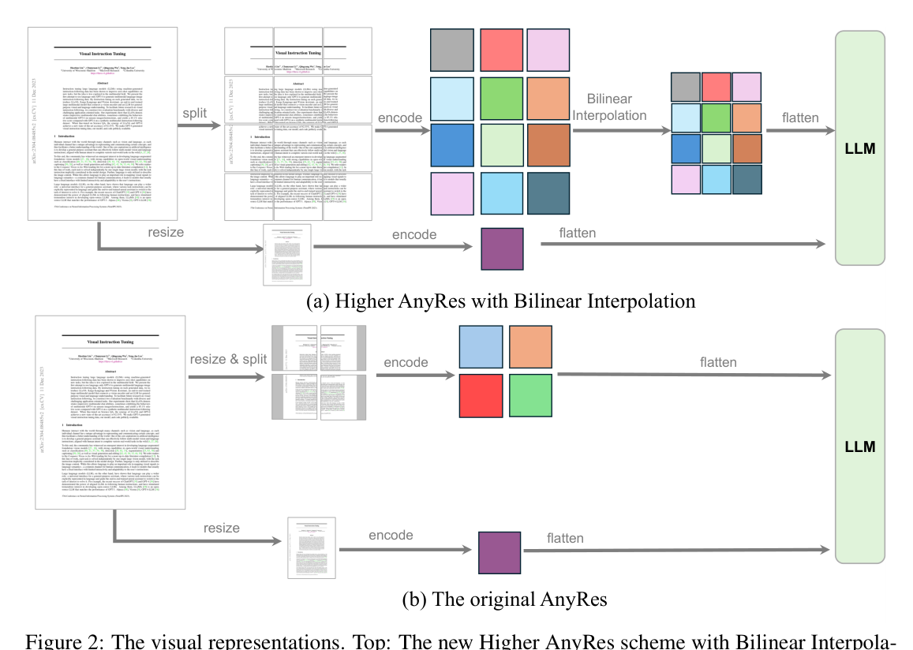
Figure 6: LLaVA-OneVision 的 Higher AnyRes 通过双线性插值在保持高分辨率的同时控制 token 数量。三种场景的视觉表征策略：
| 场景 | 表征方式 | 最大 tokens | 说明 |
|---|---|---|---|
| 单图 | AnyRes（最多 9 个 crop + 1 个 thumbnail） | \((1+9) \times 729 = 7290\) | 高分辨率，AnyRes 保持原始比例 |
| 多图 | 仅基础分辨率，无 AnyRes | \(12 \times 729 = 8748\) | 节省计算，多图无需高分辨率 |
| 视频 | 每帧 resize 到基础分辨率，196 tokens/帧 | \(32 \times 196 = 6272\) | 双线性插值压缩 to 196 tokens |
视频表征的关键细节： - 每帧 resize 到基础分辨率（而非 AnyRes），得到 feature maps - 用双线性插值将每帧的 729 tokens 压缩到 196 tokens（降低约 73%） - 最多采样 32 帧，总 visual tokens = \(32 \times 196 = 6272\) - 设计原则：与图像的最大 token 数相近，平衡图像与视频的视觉表征
为什么这个 token 策略有效：通过让单图的 token 数与视频相近（单图 7290 vs 视频最大 6272），训练时图像和视频的序列长度相近，模型学到的视觉表征可以跨模态迁移。
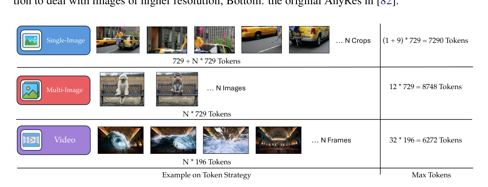
Figure 7: LLaVA-OneVision 在单图、多图、视频三种场景下的统一 token 预算策略。5.3.3 训练流程：四阶段递进¶
| 阶段 | 训练内容 | 可训练模块 |
|---|---|---|
| Stage 1 | 基础视觉-语言对齐，基础分辨率 729 tokens | MLP（投影层） |
| Stage 1.5 | 高分辨率 AnyRes，最多 5 crops | MLP |
| Stage 2（单图） | 320 万单图指令微调 | 全模型 |
| Stage 2（OneVision） | 视频 + 单图 + 多图混合训练 | 全模型 |
OneVision 训练阶段的关键：
OneVision 阶段是最关键的一步——在单图指令微调之后，将视频和多图数据混合进来。论文发现这是让模型在视频任务上产生新涌现能力（emergent capabilities）的最简单且最省成本的方式。核心机制是知识从图像向视频迁移：模型在图像上积累的高质量理解能力，通过统一的 token 表征迁移到视频理解。
5.3.4 总结¶
LLaVA-OneVision 的核心贡献： - Higher AnyRes + 双线性插值：高分辨率图像的高效 token 压缩 - 统一 token 预算：三种场景最大 token 数相近，促进图像→视频的能力迁移 - OneVision 训练阶段：单图 → 多图/视频能力的平滑迁移 - 视频 196 tokens/帧：压缩表征，最多 32 帧，共 6272 tokens
5.4 InternVL 2.5 - 像素压缩与动态分辨率 (2024)¶
📄 论文：Expanding Performance Boundaries of Open-Source Multimodal Models with Model, Data, and Test-Time Scaling
作者：Zhe Chen, Weiyun Wang, Yue Cao 等 (Shanghai AI Laboratory 及合作机构)
发表：arXiv 2024
核心思想：用 Pixel Unshuffle 将每个 448×448 tile 的 1024 tokens 压缩为 256 tokens，用 动态分辨率匹配 处理不同宽高比的图像，视频处理则通过 \(n_{\max}=1\) 固定单 tile 每帧，在 8-64 帧范围内实现高效视频理解。
5.4.1 背景与动机¶
InternVL 系列的演进：InternVL 1.5 引入动态分辨率 → InternVL 2.0 增加多图和视频 → InternVL 2.5 升级语言模型骨干 + 扩展训练数据。
核心挑战：每个 tile 经过 ViT 会产生 1024 个 visual tokens，高分辨率图像（如 2000×3000）会有很多 tile，总 token 数爆炸。
解决方案：在 ViT 输出之后，用 Pixel Unshuffle 操作将 1024 tokens 压缩为 256 tokens（4×压缩）。
5.4.2 核心方法：Pixel Unshuffle + 动态分辨率¶
整体架构（ViT-MLP-LLM 范式）：
输入图像/视频帧
↓ 动态分辨率匹配（预定义宽高比 + 448×448 tile）
↓ InternViT-6B（每个 tile → 1024 tokens）
↓ Pixel Unshuffle（1024 → 256 tokens，4× 压缩）
↓ MLP Projector
↓ LLM（InternLM2.5 或 Qwen2.5）
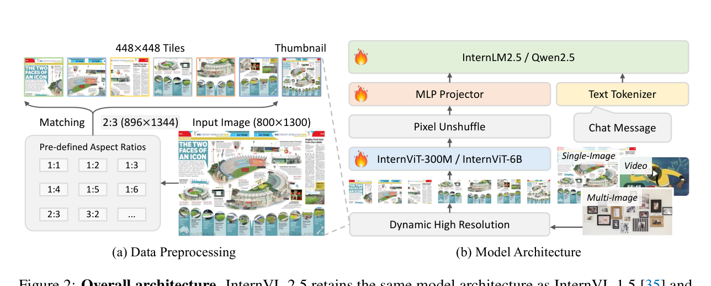
Figure 8: InternVL 2.5 的 ViT-MLP-LLM 整体架构，通过 Pixel Unshuffle 实现 4× token 压缩。Pixel Unshuffle 操作：将 \(H \times W \times C\) 的 feature map 重排为 \(\frac{H}{r} \times \frac{W}{r} \times (C \cdot r^2)\)（下采样因子 \(r=2\)），然后用线性层投影回合适维度。效果：spatial 维度减少为原来的 1/4，tokens 从 \(32 \times 32 = 1024\) 压缩到 \(16 \times 16 = 256\)。
动态高分辨率处理：
- 宽高比匹配：预定义多种宽高比（1:1, 1:2, 2:1, 1:3, 3:1, ...），给定输入图像 \(W \times H\)，计算宽高比 \(r = W/H\)，选择最接近的预定义宽高比，将图像 resize 成 tile 数最少且失真最小的配置
- Tile 数限制：tile 总数 \(n_{\text{tiles}}\) 受 \(n_{\max}\) 约束
不同数据类型的 \(n_{\max}\) 配置：
| 数据类型 | \(n_{\max}\) | 含义 |
|---|---|---|
| 单图 | 6~36（较大值） | 分配给单张图像的全部 tiles，保最高分辨率 |
| 多图 | 12~36（按图像数量分配） | 总 tiles 按比例分配给每张图像 |
| 视频 | 1（固定） | 每帧只用 1 个 tile，resize 到 448×448 |
| 文本 | null | 无视觉输入 |
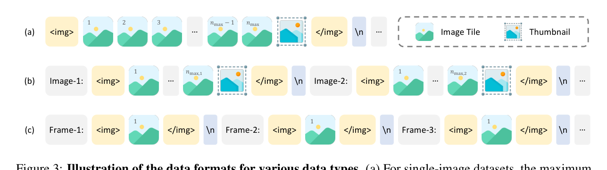
Figure 9: InternVL 2.5 对不同数据类型（单图、多图、视频、纯文本）的输入格式与 tile 分配策略。视频处理的关键设计：
视频帧设置 \(n_{\max}=1\)，每帧 resize 到固定 448×448，再经过 Pixel Unshuffle 压缩到 256 tokens/帧：
- 帧数范围：训练时采样 8~32 帧，支持最多 64 帧的视频
- token 总量：若采样 32 帧，总 visual tokens = \(32 \times 256 = 8192\)
- 设计原则：视频强调时序理解而非单帧高分辨率，固定单 tile 的设计在保持足够空间信息的同时大幅降低序列长度
- 不做数据增强：视频数据关闭 JPEG 压缩增强（图像数据则开启）
5.4.3 InternVL 系列演进对比¶
| 版本 | 视觉编码器 | Token 压缩 | 视频支持 | 语言模型 |
|---|---|---|---|---|
| InternVL 1.5 | InternViT-6B | Pixel Unshuffle | 无 | InternLM2 |
| InternVL 2.0 | InternViT-6B | Pixel Unshuffle | 有（引入） | InternLM2 |
| InternVL 2.5 | InternViT-6B | Pixel Unshuffle | 有（8-64帧） | InternLM2.5 / Qwen2.5 |
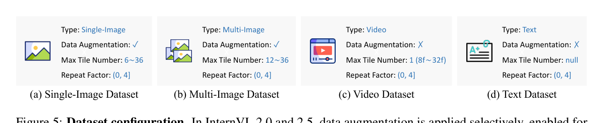
Figure 10: InternVL 2.5 的训练数据配置与 scaling 策略。5.4.4 总结¶
InternVL 2.5 视频处理的核心设计： - Pixel Unshuffle：每个 tile 1024 → 256 tokens，4× 压缩，降低序列长度 - \(n_{\max}=1\) 视频策略：每帧固定 448×448，256 tokens，简洁高效 - 动态分辨率：单图用多 tile 保高分辨率，视频用单 tile 保帧数 - ViT-MLP-LLM 范式：简洁架构，强大视觉编码器 + MLP 连接器 + 顶尖 LLM
5.5 Qwen2.5-VL 的视频理解能力 (2025)¶
📄 论文：Qwen2.5-VL Technical Report
作者：Qwen Team, Alibaba Group
发表：arXiv 2025
核心思想：在 Qwen2-VL 的 M-RoPE 基础上，进一步引入 3D patch 划分 + 动态 FPS 采样 + 绝对时间 MRoPE，实现原生分辨率的视频理解和秒级事件定位。
5.5.1 背景与动机¶
Qwen2-VL（2024.09）已经引入 M-RoPE 和动态分辨率，但视频理解仍存在两个问题：
- 时间 ID 绑定到帧索引：MRoPE 的时间 position ID 表示"第几帧"，不考虑帧率或实际时间，模型无法感知事件发生的实际时间（秒、分钟）
- 固定 FPS 采样：训练时只用固定帧率，模型无法适应不同采样率的视频
关键洞察：视频理解需要理解"时间"而非"帧数"——时间 ID 应该对应实际时间戳，训练时应该见到各种帧率。
5.5.2 核心方法：3D patch + 动态 FPS + 绝对时间 MRoPE¶
3D patch 划分（视频 tokenization）：
Qwen2.5-VL 的 ViT 使用 3D patch 划分 处理视频：
| 输入类型 | 切分方式 | Patch Embedding | 输出 |
|---|---|---|---|
| 图像 | 2D patches (14×14) | 2D 卷积 | 2D token 网格 |
| 视频 | 3D patches (2×14×14) | 3D 卷积（深度为 2） | 压缩后的时空 token 网格 |
- 图像：ViT 使用标准 2D 卷积，将图像切分为 2D patches（14×14）
- 视频：ViT 使用 3D 卷积，将视频切分为 3D patches（2×14×14，其中 2 是时间维度）
- 效果：每两个连续帧被合并为一个 token，在不增加序列长度的前提下处理更多视频帧
- 为保持一致性：每张图像被视为两个相同的帧，图像和视频共享同一套位置编码机制
动态 FPS 采样：
在训练阶段，对视频数据进行动态 FPS 采样：
- 不是固定采样率（如统一使用 1 FPS 或 2 FPS）
- 而是对每个视频随机选择不同的 FPS
- 目标是让训练数据中各种 FPS 的视频均匀分布
- 这样模型就能适应不同采样率的视频
绝对时间 MRoPE：
Qwen2.5-VL 将 MRoPE 的时间 ID 从帧索引改为绝对时间戳（毫秒级）：
| 维度 | Qwen2-VL | Qwen2.5-VL |
|---|---|---|
| 时间 ID | 帧索引（第 1 帧、第 2 帧...） | 实际时间戳（毫秒级） |
| 学习能力 | 只能看到"第几帧" | 能理解事件发生的实际时间 |
| 跨 FPS 一致性 | 不同帧率的视频时间 ID 不一致 | 一致（都是实际时间） |
数学表达：
其中 \(t_{\text{absolute}}\) 是实际时间戳（毫秒），而非帧索引。
模型通过时间 ID 之间的间隔学习时序动态，实现： - 理解事件节奏/速度 - 精确时刻定位（秒级） - 跨不同 FPS 采样率的时间对齐一致性 - 无额外计算开销
5.5.3 视频处理的其他关键技术¶
窗口注意力： - ViT 共 32 层，其中仅 4 层使用全注意力（索引 {7, 15, 23, 31}） - 其余 28 层使用窗口注意力（窗口大小 112×112 像素 = 8×8 patches） - 计算复杂度从二次方降至线性，使原生分辨率处理在推理时变得实用
动态分辨率： - 视频帧根据原始尺寸动态调整 token 数量 - 每个视频最多 16384 tokens - 为平衡长视频处理的计算需求与整体训练效率
图像与视频统一处理： - 为保持一致性，每张图像被视为两个相同的帧 - 图像和视频共享同一套位置编码机制
长视频处理： - 对于超过 30 分钟的长视频，专门构建长视频 caption 数据 - 通过多帧 caption 合成流水线生成训练数据
5.5.4 总结¶
Qwen2.5-VL 在视频理解上的核心贡献： - 3D patch 划分：将 ViViT 的 tubelet 思想应用到视频 LLM，压缩时间维度 - 动态 FPS 采样：将动态分辨率从空间维度扩展到时间维度 - 绝对时间 MRoPE：时间 ID 对应实际时间戳，实现秒级事件定位 - 窗口注意力：计算复杂度从二次方降至线性，支持原生分辨率 - 证明了视频 LLM 可以通过统一的位置编码框架（MRoPE）同时处理图像和视频
6. 总结与发展脉络¶
6.1 时间轴上的演进¶
2014 DeepVideo 直接把 2D CNN 搬到视频，发现时序难学
│
2014 Two-Stream 引入光流，显式建模运动，效果追平手工特征
│
2015 Beyond Short 在双流后加 LSTM，尝试处理长视频
Snippets
│
2015 TDD 沿光流轨迹堆叠特征
│
2016 Early Fusion 在网络中层融合空间流与时间流
│
2016 TSN 视频分段 + Segmental Consensus，提出训练 good practices
│
2017 I3D 用 inflation 复用 ImageNet 预训练，奠定 3D CNN 地位
│
2018 Non-local 把 self-attention 引入视频，替代 LSTM
│
2018 R(2+1)D 把 3D 卷积拆成 2D+1D，更易优化
│
2019 SlowFast 快慢双分支，精度与效率兼顾
│
2021 ViViT 把 ViT 扩展到视频，提出 3D tubelet 与四种注意力分解
│
2021 TimeSformer 用 2D patch + Divided Space-Time Attention 做视频 Transformer
│
2022 VideoMAE 用 tube masking + 90% mask ratio 做视频自监督预训练
│
2023 Video-LLaVA 提出 Alignment Before Projection，先在投影层前对齐图像与视频
│
2024 Qwen2-VL 提出 M-RoPE 与 Naive Dynamic Resolution，统一图文视频位置编码
│
2024 LLaVA-OneVision 用统一 token 预算 + OneVision 训练实现图像到视频的能力迁移
│
2024 InternVL 2.5 用 Pixel Unshuffle 压缩视觉 token + 动态分辨率处理高分辨率图像
│
2025 Qwen2.5-VL 引入 3D patch、动态 FPS 与绝对时间 MRoPE，支持秒级事件定位
6.2 两条主线：手工特征 vs 深度学习¶
| 阶段 | 手工特征时代 | 深度学习时代 |
|---|---|---|
| 图像特征 | SIFT (2004) | AlexNet / DeepVideo (2012/2014) |
| 加入运动 | STIP → Dense Trajectories / IDT | Two-Stream / TDD |
| 时序建模 | IDT + LSTM | Two-Stream + LSTM (Beyond Short Snippets) |
| 长视频/全局 | IDT + Fisher Vectors / VLAD | TSN + DVOF / TLE / ActionVLAD |
发展历程惊人地相似：都是先在图像特征上扩展，再加入运动信息，然后做时序建模，最后做全局编码。
6.3 核心经验¶
- 光流很强但贵：双流、I3D 都证明加光流能提升效果，但预处理耗时耗空间，推动了 Hidden Two-Stream、TSM、3D CNN 等端到端方法。
- 初始化很重要：I3D 通过 inflation 复用 2D 预训练，才使 3D 网络真正可用；ViViT 把图像 ViT 的位置编码沿时间重复、把 2D patch embedding 权重放在 3D 卷积中心，也是从图像模型初始化的关键策略。
- 拆分是降本增效的通用手段：R(2+1)D 把 3D 拆成 2D+1D，TimeSformer / ViViT Model 3 把时空注意力拆成时间+空间，本质都是降低复杂度。
- 自监督预训练对视频很重要：VideoMAE 用 tube masking + 90% mask ratio，证明小数据集上也能通过自监督学到强表征，为后续视频 LLM 的视觉编码器提供了预训练范式。
- 视频 LLM 时代，统一图文视频的表征与位置编码成为关键：从 Video-LLaVA 的跨模态对齐，到 Qwen2-VL 的 M-RoPE，再到 Qwen2.5-VL 的绝对时间编码，核心都是让图像和视频共享同一套 LLM 输入空间。
- 图像到视频的能力迁移是最省成本的路径：LLaVA-OneVision 证明先在高质量图像数据上训练，再通过统一 token 预算混合视频数据，就能让图像能力平滑迁移到视频。
- 长视频理解仍是开放问题：从 TSN 到 non-local 到 TimeSformer，大家都在探索如何高效建模长时序关系。
第二部分：视频生成¶
7. 视频生成发展脉络¶
视频生成的主线可以看作核心模型架构的代际更迭：从 GAN/VAE 的早期探索，到 Diffusion 一统天下，再到 DiT/Sora 的关键转折，以及如今自回归模型与世界模型的新前沿。其终极方向是成为能够模拟物理世界规律的世界模型。
| 阶段 | 时间 | 代表技术 | 核心特点 | 主要局限 |
|---|---|---|---|---|
| GAN/VAE 早期探索 | ~2014–2020 | GAN、VAE、Flow-based | 把图像生成能力扩展到时间维度 | 视频短、分辨率低、连贯性差，训练不稳定 |
| Diffusion 一统天下 | ~2021–2024 初 | Stable Video Diffusion、Runway Gen-1/2 | 以图像扩散模型为基座，增加时序层 | 视觉质量和连贯性提升，但对时间轴理解仍不深 |
| DiT / Sora 转折点 | 2024 初至今 | DiT、Sora | 用 Transformer 替换 U-Net，引入时空块统一表示 | 需要大规模算力和数据 |
| AR 与世界模型 | 现在及未来 | CogVideo、VideoPoet、Genie、Marble | 逐帧预测，利用 LLM 知识，探索世界模型 | 与扩散/DiT 路线并行，尚未收敛 |
关键趋势：
- 架构遵循规模定律：从 CNN/GAN 到 Diffusion，再到 Transformer-based DiT，视频模型也能通过增加算力和数据获得显著提升。
- 统一时空表示：Sora 提出的“时空块”（Spacetime Patches）让不同时长、分辨率的视频可以用同一套框架处理。
- 两条路线并行：扩散/DiT 与自回归（AR）都在快速发展，二者相互借鉴，最终目标都是构建通用世界模拟器。
下一节以 CogVideoX 为例，介绍当前视频生成的主流实现：3D Causal VAE + DiT + 3D RoPE。
8. CogVideoX - 文本到视频生成 (2024)¶
📄 论文：CogVideoX: Text-to-Video Diffusion Models with An Expert Transformer
作者：Zhuoyi Yang, Jiayan Teng, Wendi Zheng, Ming Ding 等 (Tsinghua University & Zhipu AI)
发表：ICLR 2025
核心思想：用 3D Causal VAE 压缩视频时空信息，用 Expert Transformer + Expert AdaLN 分别处理文本和视频特征，用 3D Full Attention 替代分离的时空注意力。
8.1 背景与动机¶
视频生成的核心挑战：
- 时空压缩：视频是 3D 数据（时间 × 高度 × 宽度），如何高效压缩？
- 模态融合：文本和视频的特征空间本质不同，如何有效融合？
- 长视频生成：固定帧数训练浪费数据（丢弃短视频，截断长视频），模型会分裂为两种生成模式
关键洞察： - 3D VAE 比 2D VAE + 时间插值更适合视频压缩 - 分离的时空注意力无法处理相邻帧之间的大运动（视觉信息只能通过背景 patch 隐式传递） - 混合时长训练需要 Frame Pack 技术统一不同分辨率和时长的视频
8.2 核心方法：3D Causal VAE + Expert Transformer + 3D Full Attention¶
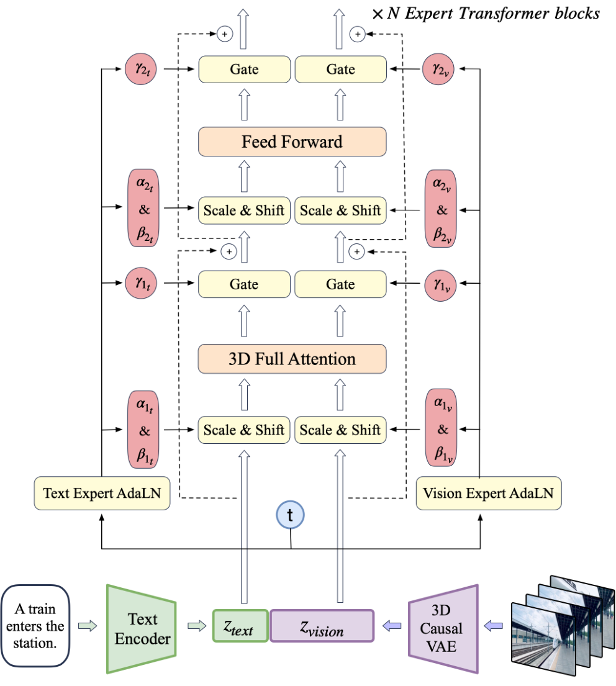
Figure 11: CogVideoX 的整体架构：3D Causal VAE 压缩视频 + Expert Transformer 融合文本条件 + 3D Full Attention 建模时空关系。3D Causal VAE（视频压缩）：
- 3D 卷积：在时空维度上压缩视频，压缩比 8×8×4（空间 8 倍，时间 4 倍）
- 时序因果卷积（temporally causal convolution）：所有 padding 在卷积空间的前部，确保未来信息不影响现在和过去
- 两阶段训练：先在 17 帧 256×256 上训练，再用 context parallel 在 161 帧上微调
- Context parallel：在时间维度上并行，每个 rank 发送长度为 k-1 的片段给下一个 rank（k = 时间卷积核大小），节省显存
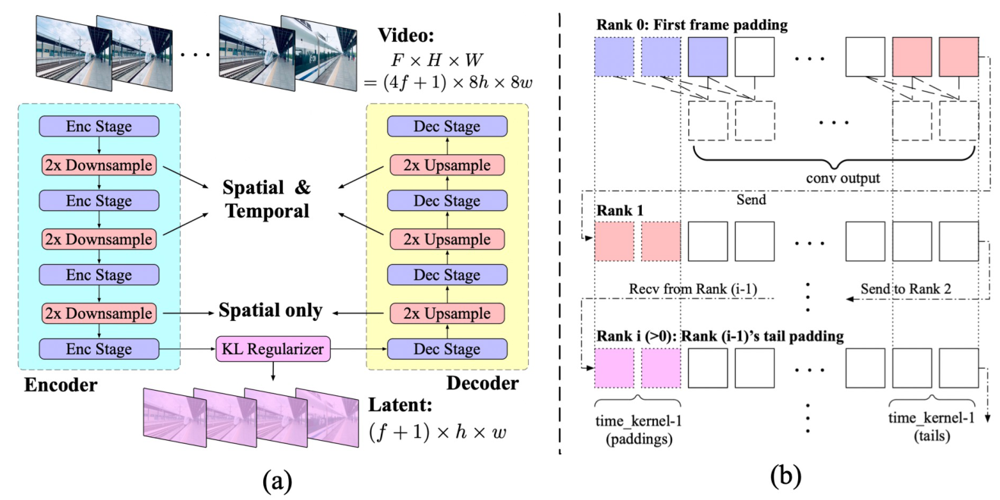
Figure 12: CogVideoX 的 3D Causal VAE：通过 3D 卷积在时空维度上压缩视频，压缩比为 8×8×4，使用时序因果卷积保证未来信息不泄露。Expert Transformer（模态融合）：
- Expert AdaLN：分别使用 Vision Expert AdaLN 和 Text Expert AdaLN 处理各自的 hidden state
- 调制输入：扩散时间步 \(t\) 作为调制输入，促进特征空间对齐同时最小化参数
- 为什么需要 Expert AdaLN：文本和视频 embedding 的特征空间本质不同，直接用同一个 LayerNorm 会导致特征空间不匹配
3D Full Attention（时空联合注意力）：
- 将文本和视频序列拼接后做统一的 3D 注意力
- 替代分离的时空注意力：分离注意力无法处理相邻帧之间的大运动
- 优势：避免隐式信息传递的不一致性问题
3D RoPE（位置编码）：
- 每个 latent 有 3D 坐标 \((x, y, t)\)
- 独立对每个维度应用 1D-RoPE，分别占据 hidden state 的 3/8、3/8、2/8 通道
- 沿通道维度拼接
Frame Pack（混合时长训练）：
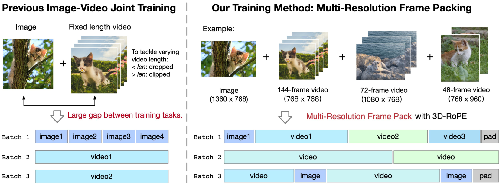
Figure 13: CogVideoX 的 Frame Pack 技术：将不同时长和分辨率的视频打包到同一 batch 中，通过 3D-RoPE 外推适应不同时长。- 将不同时长和分辨率的视频打包到同一 batch 中，确保形状一致
- 外推而非插值：3D-RoPE 位置编码使用外推适应不同时长
- 优势：不浪费数据（不丢弃短视频，不截断长视频），模型学习统一的生成模式
8.3 训练策略¶
渐进式训练： - 分辨率：256px → 512px → 768px - 时长：短视频 → 长视频
显式均匀采样： - 将时间步范围 \([1, T]\) 分为 \(n\) 个区间（\(n\) = rank 数） - 每个 rank 在自己的区间内采样，确保时间步分布更均匀，损失更稳定
扩散设置： - v-prediction, zero SNR, LDM noise schedule
数据： - ~35M 过滤后的单镜头视频片段（平均 ~6 秒） - 2B 图像来自 LAION-5B / COYO-700M
8.4 总结¶
CogVideoX 的核心贡献： - 3D Causal VAE：时序因果卷积，压缩比 8×8×4，支持长视频训练 - Expert AdaLN：分别处理文本和视频特征，解决特征空间不匹配 - 3D Full Attention：统一的时空联合注意力，替代分离注意力 - Frame Pack：混合时长训练，不浪费数据 - 代表了视频生成的主流范式：3D VAE + DiT + 3D RoPE